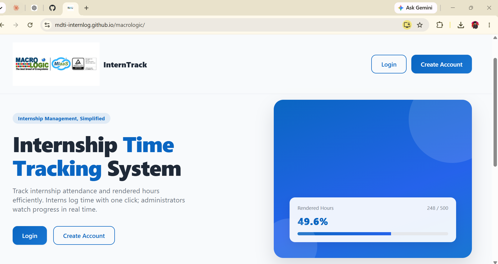
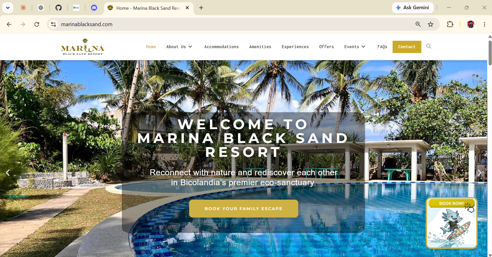
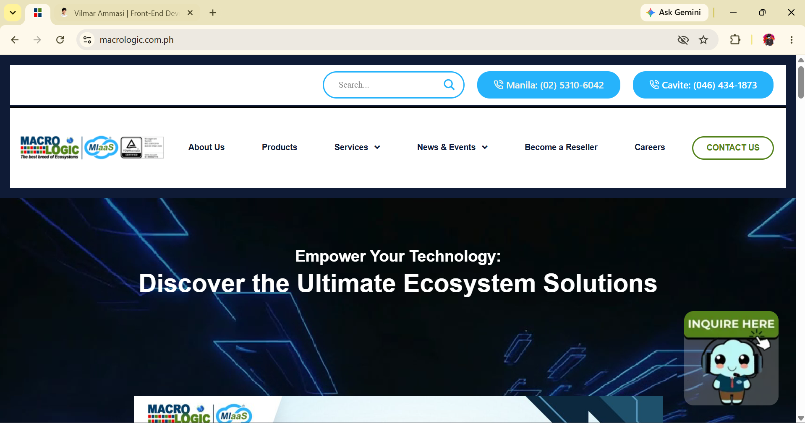
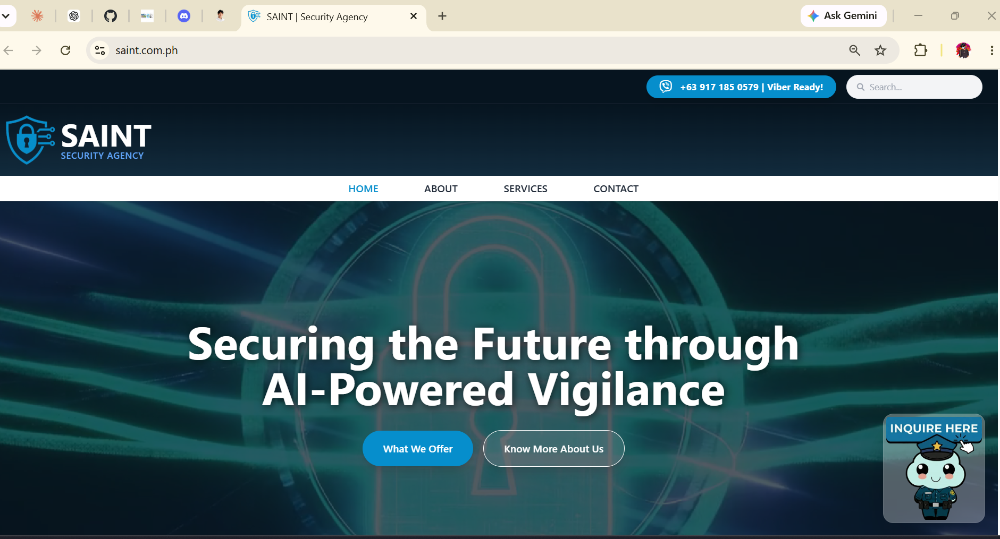
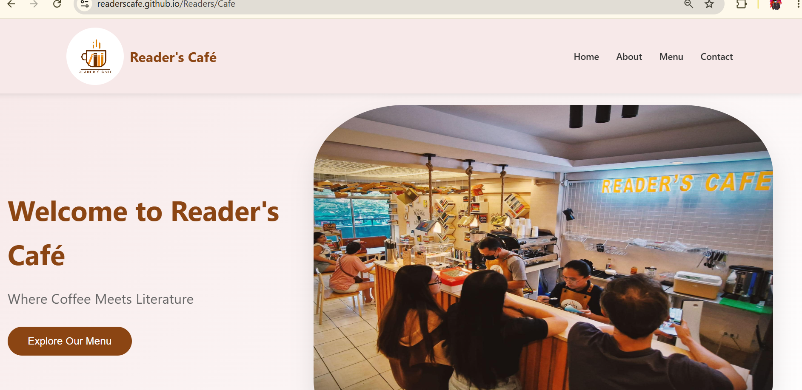
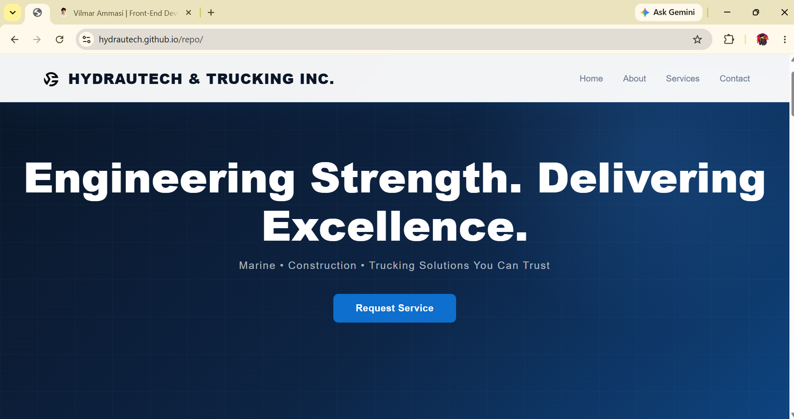
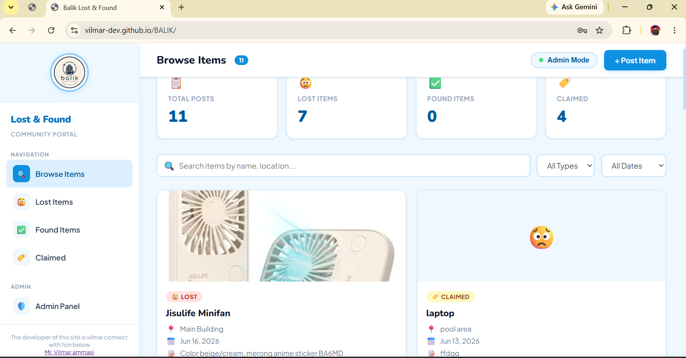
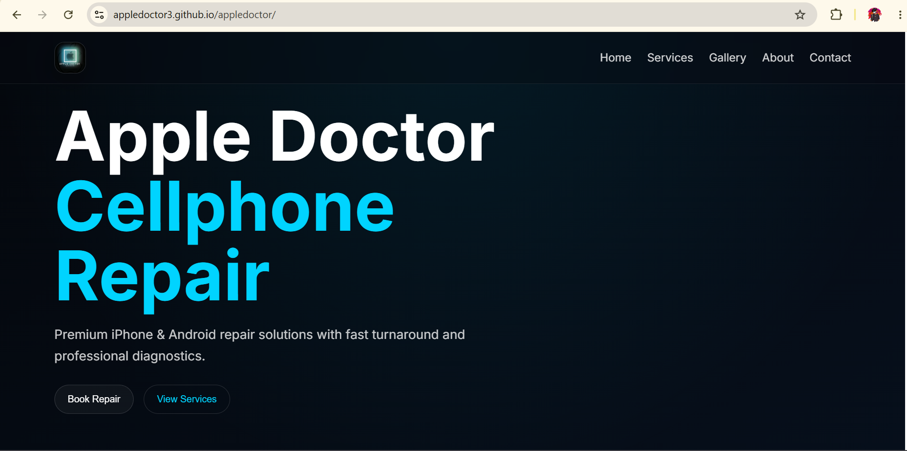
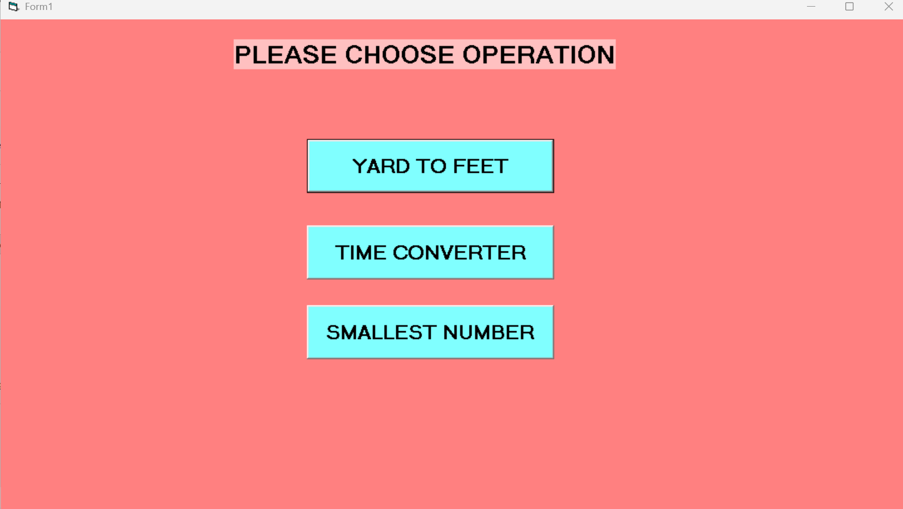
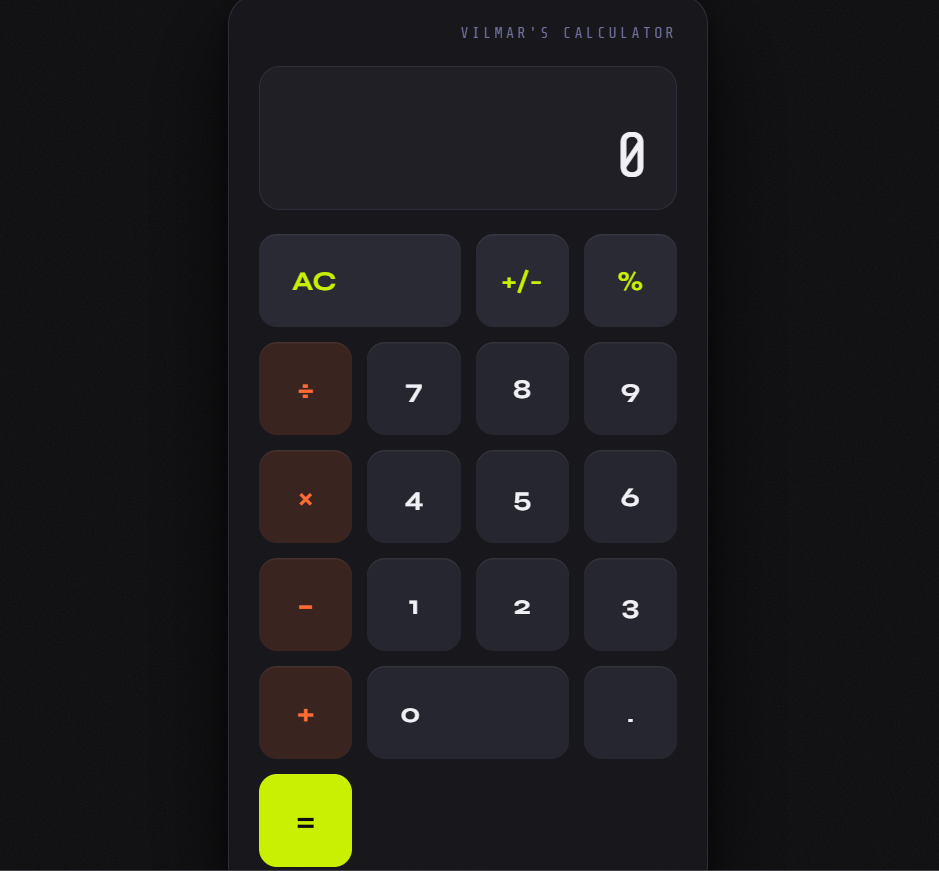

My Stack

HTML

CSS

JavaScript

React

Java

MySQL

Claude
Chatgpt
GitHub

Firebase
Full-Stack Web Developer & Freelancer building modern, responsive web applications.
Get in TouchHi! I'm Vilmar, a passionate Full-Stack Web Developer focused on building responsive, accessible, and user-friendly web applications. I work with HTML, CSS, JavaScript, React, Java, MySQL, Firebase, Git, and GitHub, and I also use modern AI development tools such as ChatGPT and Claude to support research, debugging, and development workflows. I enjoy transforming ideas into functional web applications and continuously improving my skills in full-stack development, UI/UX, problem-solving, deployment, and Progressive Web App (PWA) technologies. I enjoy solving problems and turning ideas into interactive digital experiences.
I enjoy solving problems and turning ideas into interactive digital experiences.
I provide web development solutions for individuals, startups, and businesses looking to build or improve their online presence.
Modern and responsive websites for businesses, resorts, agencies, restaurants, portfolios, and other organizations.
Custom web applications with authentication, databases, dashboards, CRUD functionality, and other business-specific features.
Responsive and user-friendly interfaces using HTML, CSS, JavaScript, React, and modern web development practices.
Convert web applications into installable and usable Android and iOS applications using Progressive Web App (PWA) technology, providing an app-like experience across mobile devices.
Website updates, troubleshooting, responsive fixes, feature improvements, and general website maintenance.
Deployment and configuration of websites using GitHub Pages, hosting platforms, domains, and production environments.

The Macrologic Intern attendance Web-app is a Progressive Web App (PWA) designed to efficiently record and manage interns' daily attendance, including Time In, Time Out, rendered hours, and internship progress. It provides organized and real-time attendance monitoring for both interns and administrators. The system is accessible through the web and can also be installed on Android and iOS devices, providing an app-like experience without requiring a traditional mobile app installation.
Tech used: Html, Css, Javascript, Firebase (Database)

beachfront resort in the Philippines that offers guests a relaxing coastal experience with scenic ocean views, comfortable accommodations, event venues, and recreational facilities, making it an ideal destination for leisure, family gatherings, and special occasions
Tech used:Wordpress,Html,Css,Javascript,Php

a Philippine IT solutions provider specializing in cloud services, cybersecurity, infrastructure, and managed IT services. The company partners with leading technology vendors such as Microsoft, IBM, Cisco, Dell Technologies, and Fortinet to deliver innovative solutions across various industries.
Tech used:Wordpress,Html,Css,Javascript,Php

Philippine security solutions provider that combines highly trained security personnel with AI-powered technologies, offering services such as surveillance, command center operations, executive protection, and intelligent security management for businesses and organizations
Tech used:Html,Css,Javascript,Php

A cozy café concept that combines the love of great coffee with the joy of reading. The project focuses on creating a warm, inviting brand experience inspired by books, locally roasted coffee, and a relaxing library atmosphere.
Tech used:Html,Css,Javascript

- Hydrautech and Trucking Incorporated is a service company that specializes in ship repairing, trucking, and construction services.
Tech used:Html,Css,Javascript

- Balik is a campus lost-and-found web application where students can post missing or found valuable items within the school. It helps students reconnect with their belongings by allowing the campus community to easily search, view, and share lost-and-found posts. ship repairing, trucking, and construction services.
Tech used:Html,Css,Javascript,Firebase

-Apple Doctor is a modern website concept designed for an iPhone and Android repair shop. The project features a clean, responsive design that showcases repair services, customer information, and contact details while providing a professional online presence for a mobile device repair business.
Tech used:Html,Css,Javascript

-My Converter is a simple and efficient desktop application
designed to quickly convert yards to feet, units of time, and numbers. It features a
user-friendly interface that makes conversions fast, easy, and convenient.
Tech used:Visual Basic (VB)

A fully responsive and interactive calculator web app built with HTML, CSS, and JavaScript, featuring a custom UI design, smooth animations, and keyboard support for efficient and user-friendly calculations
Tech used:Html,Css,Javascript
HTML
CSS
JavaScript
React
Java
MySQL
Claude
Chatgpt
GitHub
Firebase
Have a project in mind or want to discuss an opportunity? I would be happy to hear from you.